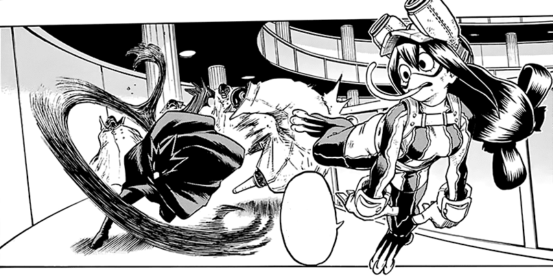

About Froppy
Froppy is an aspiring hero of class-1A at UA high school. She has the quirk: Frog. Her real name is Tsuyu Asui

there she go!
Froppy's characteristics
- she can do basically anything a frog can do
- she can stick her tongue out<---->20m
- she can throw up her stomach and clean it
- she can secrete a mucus that camoflauges herself
- She can jump really high and really far
Froppy's friends
Froppy has plenty of close friends in the hero course at UA High School